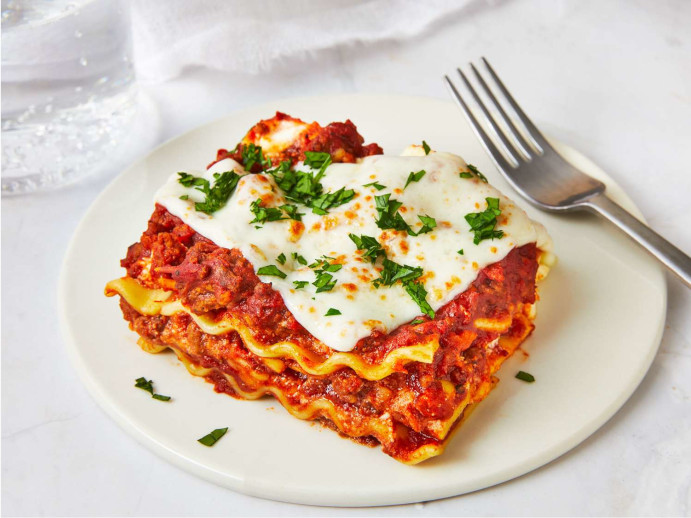

Caprese Stuffed Chicken

Description
Get ready to experience the epitome of Italian flavors wrapped up in a tender, juicy package! Caprese Stuffed Chicken takes the classic Caprese salad to a whole new level. Succulent chicken breasts are filled with a heavenly combination of fresh mozzarella, ripe tomatoes, and fragrant basil, then baked to perfection. Each bite is a tantalizing journey of tastes and textures that will transport you straight to the sunny streets of Italy.
Ingredients
- 4 boneless, skinless chicken breasts
- 8 oz fresh mozzarella, sliced
- 2 large ripe tomatoes, sliced
- 1 cup fresh basil leaves
- 2 tablespoons balsamic glaze (store-bought or homemade)
- 2 tablespoons olive oil
- 2 cloves garlic, minced
- 1 teaspoon dried oregano
- Salt and pepper to taste
- Toothpicks
Steps
- Preheat your oven to 375°F (190°C). Grease a baking dish large enough to fit the chicken breasts in a single layer.
- Butterfly the chicken breasts: Lay each breast flat on a cutting board, and using a sharp knife, slice horizontally through the center, stopping just short of cutting through the other side. Open the breast like a book, so it lays flat and resembles a butterfly.
- Season the inside of each butterflied chicken breast with salt, pepper, and dried oregano.
- Layer each chicken breast with fresh mozzarella, sliced tomatoes, and fresh basil leaves. Drizzle a little balsamic glaze over the filling.
- Carefully fold the chicken breast closed, tucking in any fillings that try to escape. Secure the chicken with toothpicks to hold everything together.
- In a small bowl, mix the olive oil and minced garlic. Brush this garlic oil mixture over the top of each stuffed chicken breast.
- Heat a skillet over medium-high heat. Sear each chicken breast for about 2 minutes on each side until lightly browned.
- Transfer the seared chicken breasts to the greased baking dish and bake in the preheated oven for 20-25 minutes or until the chicken is fully cooked and the cheese is melted and bubbly.
- Remove the toothpicks before serving. Drizzle a little more balsamic glaze over the top if desired, and garnish with fresh basil leaves for an extra touch of elegance.
- Serve your Caprese Stuffed Chicken with a side of your favorite pasta or a fresh green salad, and savor the delightful blend of Mediterranean flavors. Buon appetito!